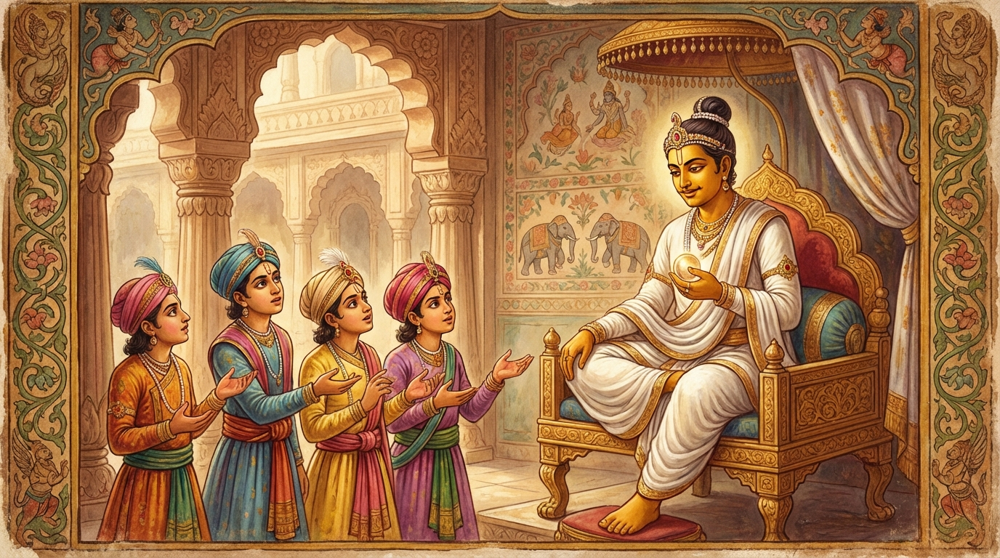

8. කිංසුකෝපම ජාතකය (248)
“සබ්බෙහි කිංසුකො දිට්ඨො” (සියල්ලන් විසින් කිංසුකයා දක්නා ලදී) යන මේ දේශනාව ශාස්තෲන් වහන්සේ ජේතවනාරාමයේ වැඩවාසය කරන සමයෙහි ‘කිංසුකෝපම’ සූත්ර දේශනාව අරබයා වදාළ සේක. භික්ෂූන් වහන්සේලා සිව් නමක් තථාගතයන් වහන්සේ වෙත එළඹ කමටහන් (භාවනා අරමුණු) ඉල්ලා සිටියහ. ශාස්තෲන් වහන්සේ ඔවුන්ට කමටහන් දුන් සේක. උන්වහන්සේලා කමටහන් ලබාගෙන තම තමන්ගේ රෑ දාවල් වසන තැන්වලට වැඩම කළහ. උන්වහන්සේලා අතුරෙන් එක් නමක් ෂඩ් ඵස්සායතන (ඇස, කන, නාසය, දිව, කය, මනස යන ආයතන හය) විමසා බලා රහත් බවට පත්වූහ. එක් භික්ෂුවක් පඤ්චස්කන්ධය ද, එක් භික්ෂුවක් සතර මහා භූතයන් ද, එක් භික්ෂුවක් අටළොස් ධාතු (ධාතු 18) ද විමසා බලා රහත් වූහ. උන්වහන්සේලා තම තමන් වහන්සේලා ලැබූ ඤාණ විශේෂයෙන් බුදුරජාණන් වහන්සේට දන්වා සිටියාහුය. එහිදී එක් භික්ෂුවකට “මේ කමටහන්වල විවිධත්වයක් ඇත. එහෙත් නිවන එකකි. එසේනම් (විවිධ අරමුණු ඔස්සේ ගිය) සියලු දෙනාම රහත් බවට පත්වූයේ කෙසේද?” යනුවෙන් සැක සහිත අදහසක් ඇතිවිය. ඒ භික්ෂුව බුදුරජාණන් වහන්සේගෙන් ඒ බව විමසීය. ශාස්තෲන් වහන්සේ, “මහණ! එරබදු ගස දුටු සහෝදරයන් සතරදෙනාට වූ දෙය හා මෙය වෙනස් වන්නේ කෙසේද?” යැයි විමසා වදාළ සේක. එවිට “ස්වාමීනි! ඒ කාරණය අපට වදාරණු මැනව” යි ඒ භික්ෂූන් විසින් ඉල්ලා සිටි කල්හි බුදුරජාණන් වහන්සේ අතීත කථාව ගෙනහැර දැක්වූ සේක.
යටගිය දවස බරණැස් නුවර බ්රහ්මදත්ත රජ රජය කරවීය. ඔහුට පුත්රයෝ සතරදෙනෙක් සිටියහ. ඔවුහු එක්දිනක් රථාචාරියා කැඳවා, “යහලුව! අපි කිංසුක (කෑල/එරබදු) ගස් දකිනු කැමැත්තෙමු. එරබදු ගසක් අපට පෙන්වන්නැ” යි කීවාහුය. රථාචාරියා “යහපති, පෙන්වන්නෙමි” යි කියා හතර දෙනාටම එකවර නොපෙන්වා, පළමුව දෙටු පුත්රයා රථයෙහි හිඳුවාගෙන වනයට ගෙන ගොස්, “මේ එරබදු ගසක් ය” යි දලු හටගැනීමට ආසන්න, කොළ නැති කණුවක් ලෙස පෙනෙන කාලයෙහි එරබදු ගස පෙන්වීය. අනෙකාට දලු බහුලව ඇති කාලයෙහි ද, අනෙකාට මල් පිපුණු කාලයෙහි ද, අනෙකාට ගෙඩි හටගත් කාලයෙහි ද එම එරබදු ගස පෙන්වීය. පසුකලෙක සහෝදරයෝ සතරදෙනාම එකට හිඳ “එරබදු ගස නම් කෙබඳු දෙයක්ද?” යැයි කථාවක් උපදවා ගත්හ. එවිට:
- එක් කුමාරයෙක් “එය දැවුණු කණුවක් වැනිය” යි කීවේය.
- දෙවැන්නා “එය නුග ගසක් වැනිය” යි කීවේය.
- තුන්වැන්නා “එය මස් වැදැල්ලක් වැනිය” යි කීවේය.
- සිව්වැන්නා “එය මහරි (සිරීස) ගසක් වැනිය” යි කීවේය.
ඔවුහු ඔවුනොවුන්ගේ කථාවෙන් සතුටු නොවී පියා සමීපයට ගොස්, “දේවයන් වහන්ස! එරබදු ගස කෙබඳුද?” යැයි විචාරා, “තොප විසින් කුමක් කියන ලදදැ” යි රජු ඇසූ කල්හි තම තමන් කී ආකාරය රජතුමාට කීවාහුය. රජතුමා, “නුඹලා හතරදෙනාම එරබදු ගස දැක ඇත. එහෙත් ඔබලා විසින් ‘මේ කාලයෙහි එරබදු ගස කෙසේද? මේ කාලයෙහි කෙසේද?’ යැයි කාලය බෙදා වෙන්කර රියැදුරුගෙන් නොවිමසන ලදි. ඒ නිසා තොපට සැක උපන්නේය” යි කියා මෙම පළමු ගාථාව වදාළේය.

“තොප සියලු දෙනා විසින්ම කිංසුක (එරබදු) ගස දක්නා ලදී. එසේ තිබියදීත් මෙහිලා කුමක් සැක කරව්ද? රථාචාරියාගෙන් එරබදු ගස පවතින සියලු අවස්ථාවන් (කාලයන්) ගැන තොප විසින් නොවිමසන ලද්දේමය.”
යනුවෙන් පළමු ගාථාව කීවේය.
එහි න හි සබ්බෙසු ඨානෙසු, සාරථී පරිපුච්ඡිතො යන්නෙහි අර්ථය නම්: තොප සියලු දෙනා විසින්ම කිංසුක ගස දැක ඇත. එසේ තිබියදී තොප මේ ගැන සැක කරන්නේ මන්ද? ‘සියලු කාලයන්හි කිංසුක ගස මෙබඳු වේදැයි’ තොප විසින් ගසෙහි සියලු අවස්ථාවන් පිළිබඳව රථාචාරියාගෙන් නොවිමසන ලදී. තොපට සැක උපන්නේ එබැවිනි.
බුදුරජාණන් වහන්සේ මේ කරුණ දක්වා, “මහණ! ඒ සොහොයුරන් සතරදෙනා ගසෙහි අවස්ථාවන් බෙදා වෙන් කොට නොවිමසූ බැවින් කිංසුක ගස පිළිබඳව සැක උපදවා ගත්හ. එලෙසින්ම නුඹ ද මේ ධර්මයෙහි සැක උපදවා ගත්තෙහිය” යි වදාරා, අභිසම්බුද්ධ වූ සේක් දෙවන ගාථාව ද වදාළ සේක.
“මෙසේ සියලු විදසුන් නුවණින් යම් කෙනෙකුන් විසින් ස්පර්ශයතනාදී ධර්මයෝ (ප්රභේද වශයෙන්) නොදක්නා ලද්දාහු ද, ඔවුහු ඒකාන්තයෙන්ම කිංසුක ගස පිළිබඳව සැක කළ සොයුරන් සේ ධර්මයන්හි සැක කරති.”
යනුවෙන් දෙවන ගාථාව වදාළ සේක.
එහි අර්ථය මෙයයි: යම්සේ ඒ සහෝදරයෝ සියලු තන්හි (අවස්ථාවන්හි) කිංසුක ගස නොදුටු බැවින් සැක කළාහු ද, එපරිද්ෙන්ම සියලු විදසුන් නුවණින් (විපස්සනා ඤාණ) යම් කෙනෙකු විසින් සියලු ෂඩ් ඵස්සායතන, ස්කන්ධ, භූත, ධාතු වශයෙන් වූ ධර්මයන් ප්රභේද වශයෙන් නොදන්නා ලද්දාහු ද, සෝවාන් මාර්ගය ලබා නොගත් බැවින් ප්රතිවේධ නොකරන ලද්දාහු ද, ඔවුහු ඒ ඵස්සායතනාදී ධර්මයන් කෙරෙහි සැක කරති. ඒ, එකම කිංසුක ගස ගැන සැක කළ සහෝදරයන් හතරදෙනා මෙනි.
බුදුරජාණන් වහන්සේ මෙම ධර්ම දේශනාව ගෙනහැර දක්වා ජාතක කථාව පූර්වාපර සන්ධි ගළපා නිමවා වදාළ සේක. “එකල බරණැස් රජව උපන්නේ මම ම වෙමි” යි තමන් වහන්සේ දක්වා වදාළ සේක.
අටවැනි වූ කිංසුකෝපම ජාතක වර්ණනාවයි.